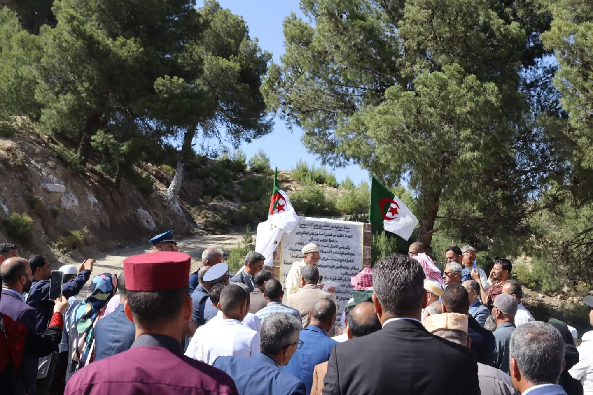
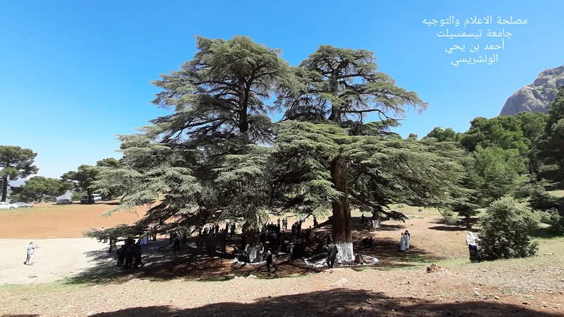
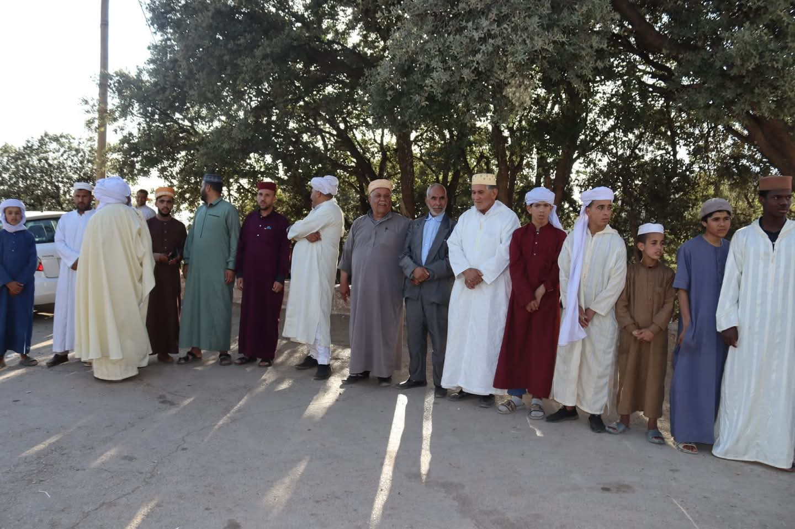
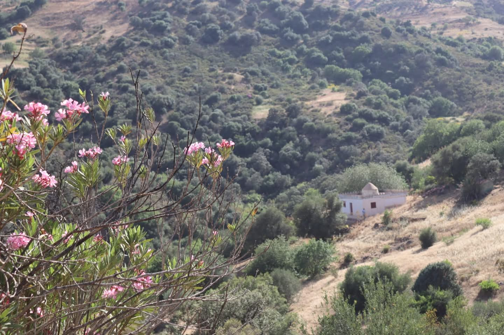
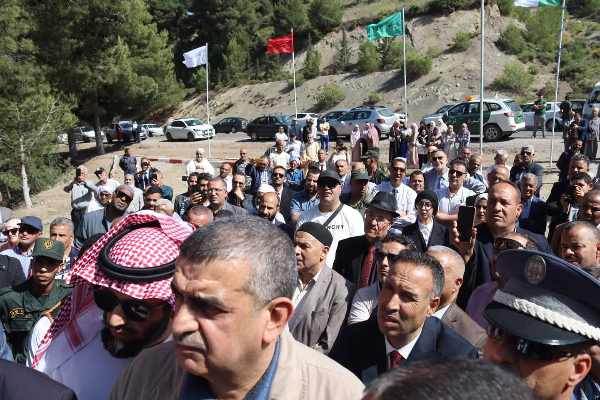

فيديوهات
جارٍ تحميل ...
تدشين النصب التذكاري

كرسي الونشريسي
باقتراح من عميد كلية الآداب واللغات، أ. د. الميلود قردان، وافق معالي وزير الدولة وعميد جامع الجزائر الأعظم، السيد محمد المأمون القاسمي الحسني، على اعتماد "كرسيّ الفقه" باسم الإمام الونشريسي في المسجد الأعظم.
زيارة إلى الحظيرة الجهوية - عين عنتر


زيارة إلى مسقط رأس العلامة الونشريسي


صور الملتقى
جارٍ تحميل ...